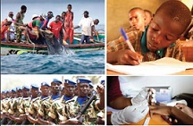

 Le 25 Mars 2012, le peuple sénégalais, en opérant une 2ème alternance pacifique après celle de 2000 et, en confiant ses destinées au Président Macky Sall, élu avec 65 pour cent des voix, a signé un pacte de confiance avec ce dernier. Un engagement à la hauteur de l’espoir d’un mieux – être et d’un mieux-vivre. Le Président Macky Sall, conscient de cette aspiration placée en lui, s’est engagé à opérer les ruptures nécessaires.
Merci d'activer votre connexion internet pour avoir les dernières informations sur les réalisations du Pr Macky SALL
Depuis avril 2013, malgré la fluctuation des prix sur le marché international, le chef de l’Etat s’est vigoureusement attaqué à la baisse des prix des denrées de première nécessité. Dans un pays qui importe une grande partie ses denrées alimentaires, l’homologation des prix de denrées de première nécessité, notamment le riz brisé, le sucre cristallisé et l’huile de fût, était une demande sociale forte et elle a véritablement contribué à soulager le panier de la ménagère longtemps affecté par une inflation galopante. Désormais, avec l’homologation de ces prix, le kilo de riz ordinaire est à 280 FCFA au lieu de 325 FCFA, le kilo du riz parfumé est à 435 FCFA au lieu de 475 FCFA, le kilo du sucre se vend à 580 CFA au lieu de 690 FCFA,alors que le litre d’huile est à 960FCFAcontre 1 200 FCFA. Cette baisse considérable est un acte fort pour le Chef de l’Etat et participe à l’amélioration du pouvoir d’achat des familles sénégalaises. Réduire le prix des denrées de première nécessité, c’est la voie à suivre pour soutenir les populations. Les paniers des ménagères sénégalaises ont souffert avant l’arrivée du Président Macky Sall. Aujourd’hui, nous aimerions que le gouvernement s’attèle aussi à baisser les autres produits. La mesure est importante parce que grossistes, détaillants et marchands vendent maintenant au même prix. Auparavant, d’un détaillant ou d’un grossiste à un autre, les prix variaient beaucoup. Ce n’est plus le cas maintenant. Un soulagement pour les ménages Omar pouye : « la voie à suivre » Nous sommes contents de cette mesure prise par le gouvernement du Sénégal. Le riz et l’huile sont consommés par tous les Sénégalais. Donc, nous sommes les principaux bénéficiaires de cette mesure. La vie est tellement dure au Sénégal que cette mesure nous arrange. Nous sommes 4 personnes à la maison pour une dépense quotidienne de 5 000 FCFA.
Le programme des Domaines Agricoles Communautaires (ProDAC) est une réponse vigoureuse à la problématique de l’emploi. Le concept se veut procéder d’une double démarche : la création de pôles de compétitivités économiques et l’aménagement du territoire pour doter, surtout l’intérieur du pays, d’infrastructures agricoles permettant la mise en valeurs de grands domaines allant de 1000 à 5 000 ha. Il s’agit de véritables agropoles, lieu d’insertion de jeunes ruraux, de diplômés d’écoles de formation (aux métiers de l’agriculture et disciplines connexes), mais également de promoteurs privés désireux d’investir le secteur aussi bien dans ses activités de production que dans celles de transformation et de services agricoles. Un des enjeux majeurs tient, ici, de la double préoccupation du Président de la République son Excellence Macky SALL quant à l’employabilité des jeunes et leur insertion, lorsqu’on sait, par ailleurs, que près de 60% de nos demandeurs d’emplois, au Sénégal, ont un niveau d’éducation ne dépassant pas le primaire. Par conséquent, le seul secteur capable d’absorber une telle demande est, sans aucun doute, celui de l’agriculture. Le programme compte, au total, 10 Domaines Agricoles Communautaires répartis sur l’ensemble du territoire national.
Le président sénégalais Macky Sall a promulgué la loi prévoyant des baisses du prix des loyers de 4 à 29 % dans le pays, qui devront être effectives à compter du mois de février, selon l'AFP se référant à des sources officielles. Adoptée à l'unanimité par les députés le 15 janvier dernier, cette loi, destinée à permettre un meilleur accès au logement au Sénégal, a été signée mercredi par le président Sall et par son Premier ministre Mme Aminata Touré, selon un fac-similé publié vendredi par le journal privé Sud Quotidien, une promulgation confirmée par la présidence sénégalaise et des responsables à l'Assemblée nationale. "La loi entre en vigueur et les baisses devront être appliquées à partir du mois de février", a indiqué un député membre de la majorité parlementaire. Le gouvernement espère que la loi sur la baisse des loyers permettra d'améliorer le pouvoir d'achat des Sénégalais. Lors des débats à l'Assemblée nationale la semaine dernière, le ministre du Commerce, de l'Entreprenariat et du Secteur informel, Alioune Sarr, avait évalué à environ 122 milliards de FCFA (près de 186 millions d'euros) le montant des sommes qui seront épargnées grâce aux baisses sur les prix des loyers. La loi concerne la "baisse des loyers n'ayant pas été calculés suivant la surface corrigée". Elle fixe une baisse de 29 % pour les loyers inférieurs à 150.000 FCFA (229 euros), 14 % pour ceux compris entre 150.000 FCFA et 500.000 FCFA (229 et 762 euros), et 4 % pour ceux dépassant 500.000 FCFA. Selon une étude récente de l'Agence nationale de la statistique et de la démographie (ANSD), Dakar et ses banlieues concentrent près de 20 % des quelque 13 millions d'habitants du Sénégal, et "51,6 % des ménages sont des locataires". "Le département de Dakar affiche les loyers les plus chers" au Sénégal, et le coût du loyer moyen y a connu "une hausse soutenue" de 2000 à 2009. Durant la même période, l'augmentation moyenne du loyer a été de 38,6 %, indique cette étude datant de décembre 2012, selon laquelle les locataires souhaitaient "une baisse du loyer de près de 35 %".
Pendant des années, les Sénégalais ont été victimes des coupures intempestives de courant qui empoisonnaient leur quotidien. Le réseau national de distribution d’énergie électrique apparaissait comme étant l’un des moins performants de la sous région Ouest africaine. Depuis l’arrivée du Président Macky Sall à la tête du Sénégal, des efforts louables visant à freiner le gaspillage des ressources et à la restructuration ont été mis en route avec notamment la réduction des polices d’abonnement à la SENELEC, de 7719 à 3791 polices et poursuite du processus d’audit du fichier des abonnements. Une dotation budgétaire de 27 milliards FCFA du Fonds de Soutien au Secteur de l’Energie (FSE) pour soutenir les prix de l’électricité a été dégagé en 2012. A noter aussi l’absence de la hausse des prix de l’éléctricité depuis 2 ans malgré les fluctuations des prix du pétrole. En outre, la production d’électricité s’est améliorée en 2013 grâce à la mise en œuvre d’un plan d’urgence de redressement du secteur de l’énergie. Avec une capacité actuelle de 587 méga-watts (MW), le Sénégal grâce aux investissements envisagés dans le cadre du programme énergétique pour la période 2014-2017, aura une puissance exploitable du service public de l’électricité de 1000 MW d’ici à 2017. Le mix énergétique prévu dans le programme énergétique pour la période 2014-2017 permettra de diversifier davantage la production et réduire la dépendance vis-à-vis du combustible et assurer une offre suffisante et durable.
Le manque d’accès à l’eau potable est l’une des principales incidences de la pauvreté au Sénégal. Or en 2010, l’Organisation des Nations Unies (ONU) a reconnu «le droit à une eau potable salubre et propre comme un droit fondamental, essentiel au plein exercice du droit à la vie et de tous les droits de l’homme» La mobilisation des ressources en eau souterraine reste encore très faible (5,5%). En 2013, des efforts louables ont été consentis notamment depuis deux ans, avec le programme national d’accès à l’eau potable et à l’électricité dans toutes les zones rurales et un financement de 44 123 milliards. Par exemple à Touba, 2 châteaux d’eau de 1000m3, un château d’eau de 500 m3 et 2 réservoirs d’eau de 6000 m3 y compris leurs forages à haut débit ont été réalisés. En 2013, la production d’eau potablea ainsi progressé de 0,6% du premier trimestre au deuxième trimestre alors que dans la même période en 2012, elle avait connu une hausse de 3,6%. L’eau potable est devenue accessible à 91,5% des ménages. Il est à noter aussi que l’Etat a supporté pour les usagers de Dakar la facture d’eau de septembre à hauteur de 50% soit environ 2.2 milliards de FCFA.